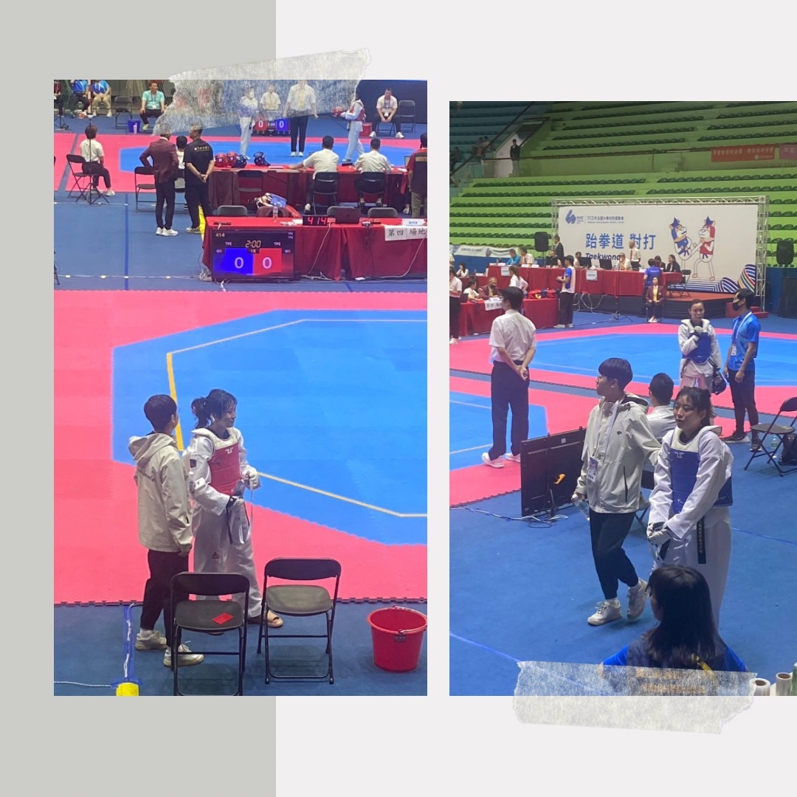

中原大學跆拳道社 (點擊展開戰績)
動機： 熱愛跆拳道並想要在該領域取得成就。
比賽經歷：
- 第十七屆弘光盃對打 - 第三名
- 113年全大運品勢與對打 - 第七名
感想：
賽程收穫滿滿，參加全大運後才真切感受到高手雲集、競爭激烈的氛圍。雖然品勢表現不如預期，但還是進入八強，感謝學姐們的指導和鼓勵。
對打部分，雖然進步不少，還是未能抓住關鍵得分點，但至少成功踢到一顆頭，對手實力強大，打到一半有些動搖，幸好沒受傷。未來會繼續努力，下次目標進入四強，並爭取入選明年東京聽奧國家代表隊！感謝學長姐們一路上的支持和幫助。


